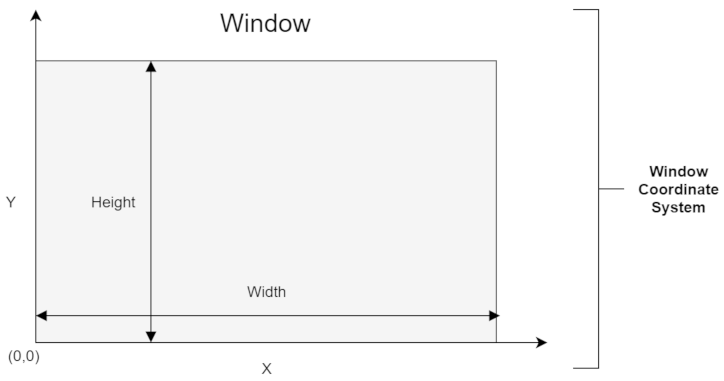
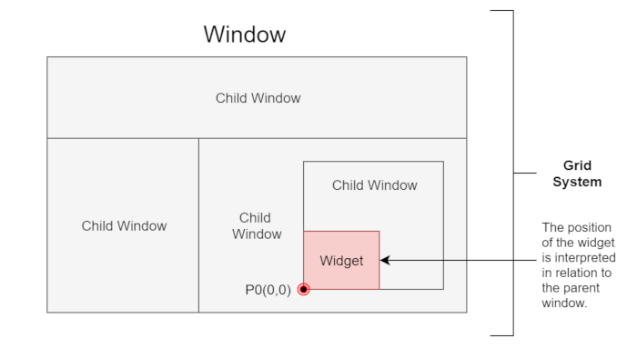
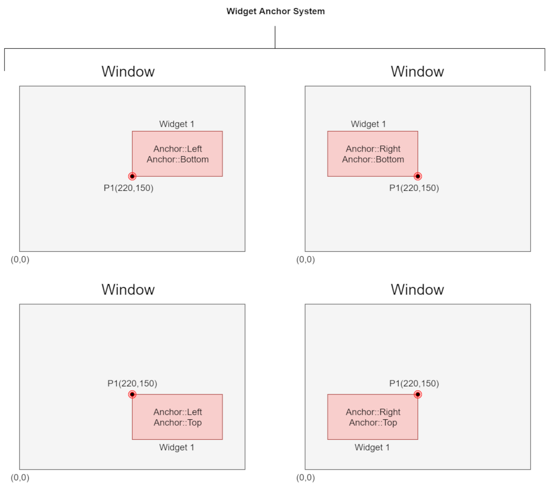

2. The coordinates, grids and anchor systems.
Window internal coordinates
In the engine, the coordinates are used in relation to the first quarter of the Cartesian system. This means that the point (0,0) is in the lower left corner of the window, while the point (1,1) is in the upper right corner.
This rule applies to all windows, sub-windows(childs) and widgets.

At the moment, the engine does not have a dedicated "Grid" widget, but this is the role that the window widget already fulfills. Windows can be nested in the other, thus creating a separate grid:
Each window and sub-window has its own event processor, and events generated by the physical window propagate down the hierarchy and then into the widgets.
The windows themselves can change their position and size automatically based on the size of the physical window. Just use the SetResizeProportions () function and set the proportions of changes that are calculated in relation to the size of the window that is higher in the hierarchy. This topic will be further discussed in the tutorials.

Widgets anchor
The position of each widget (as well as sub-windows) is set relative to the parent's position (check image above).
When you create a widget, you must specify several parameters. Two of them are the position of the widget and the flags that define how to interpret that position. In a word - using flags - you can anchor the widget at its various points as shown in the picture below.
